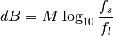
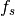
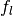
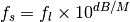
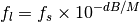
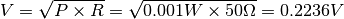
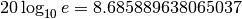
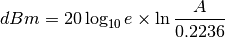
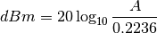

decibel – Decibel Calculator¶
Analysis¶
The essential rule of decibels (dB) appears to be this.

Where M is either 10 or 20, depending on whether we’re talking about Power, Voltage or Current. Power uses 10. Voltage and Current use 20.
The value of  is the “source” and  is the “load”.
We can solve this two other ways.


The other half of the program is a kind of units conversion from Volts, Watts or Amps to dBm.
dBm with 1 mW/50Ω as reference (= 0 dBm)
In this case, the program does a simple units conversion among nine source units and the dBm value.
This involves a magical constants. 0.2236 V, for example, is part of the 1 mW/50Ω calculation.

The legacy form depends on natural logarithms. , a constant that shows up the legacy program.

Using base 10 logarithms:

Implementation¶
This is two closely-related three-variable Solver class definitions.
- Power (uses M=10)
- Voltage and Current (use M=20)
We can create a common superclass and three instances that are tailored for the various detailed calculations.
There is also a set of nine units which can convert back and forth between various scales of Volts, Amps and Watts to dBm.
hamcalc.electronics.decibel – Decibel Calculator
These are three Solvers for decibel problems in power, voltage or current.
Here are some test cases:
>>> import hamcalc.electronics.decibel as decibel
>>> decibel.voltage( f_1=13.2, f_2=12 )
{'db': -0.8278537031645, 'f_1': 13.2, 'f_2': 12}
>>> decibel.current( f_1=2.3, db=2 )
{'db': 2, 'f_1': 2.3, 'f_2': 2.8955284471265843}
>>> decibel.power( f_2=800, db=5 )
{'db': 5, 'f_1': 252.98221281347034, 'f_2': 800}
>>> decibel.WATT.dBm( decibel.MILLIWATT.to_std(900) )
29.542689153465723
>>> decibel.VOLT.dBm(decibel.VOLT.to_std(12.36))
34.85093343076822
>>> decibel.AMP.dBm(decibel.AMP.to_std(2.3))
54.22452082278453
- class hamcalc.electronics.decibel.DB_Solver(M=10)[source]¶
Superclass for all dB solvers. This handles the generic case.
This is a callable object, an instance is created and used as follows:
>>> voltage= DB_Solver( M=20 ) >>> voltage( f_1= 13.2, f_2= 12 ) {'db': -0.8278537031645, 'f_1': 13.2, 'f_2': 12}
Similar solvers can be built for Power or Current.
Introduction¶
Almost none, really.
Quirks¶
In option 2, the dBm calculation, the flag for working with Power, in watts, is never reset. It’s the P variable, set on lines 1360-1380. It is used on line 1590, but never reset for other units. Once you use Watts, any further attempt to use Volts or Amps produces wrong answers.
Sample Output 1¶
DECIBEL CALCULATOR by George Murphy VE3ERP
Press number in < > to:
<1> Calculate unknown factor from two known factors.
(factors: input value, output value, dB).
<2> Calculate dBm for any given value and dB change between a consecutive
series of values.
<0> EXIT
Press number in < > to select factor you want to FIND :
POWER VOLTAGE CURRENT
───── ─────── ───────
<1> WATTS in (source) <4> VOLTS in (source) <7> CURRENT in (source)
<2> WATTS out (load) <5> VOLTS out (load) <8> CURRENT out (load)
<3> dB gain/loss <6> dB gain/loss <9> dB gain/loss
<0> EXIT
Input and Output values are expressed in the same unit of measurement.
ENTER Voltage in (source):? 13.2
ENTER Voltage out (load):? 12
Voltage in (source): 13.200
Voltage out (load): 12.000
Voltage gain/loss: -0.828 dB
Sample Output 2¶
DECIBEL CALCULATOR by Erik Madsen OZ8EM
Edited for HAMCALC by George Murphy VE3ERP
This program gives the level in dBm with 1 mW/50Ω as reference (= 0 dBm). It
also gives the ratio in dB of consecutive voltage, current or power levels.
Press number in < > to select:
VOLTAGE: <1> V
(RMS) <2> mV
<3> µV
CURRENT: <4> A
(RMS) <5> mA
<6> µA
POWER: <7> W
<8> mW
<9> µW
EXIT <0>
ENTER: First value (V)? 12.36
12.36 V =34.85 dBm
ENTER: Next value (V)...(or 0 to Quit)? 13.4
13.40 V =35.55 dBm: 12.36 V to 13.40 V = 0.70 dB
ENTER: Next value (V)...(or 0 to Quit)? 14.2
14.20 V =36.06 dBm: 13.40 V to 14.20 V = 0.50 dB
ENTER: Next value (V)...(or 0 to Quit)?